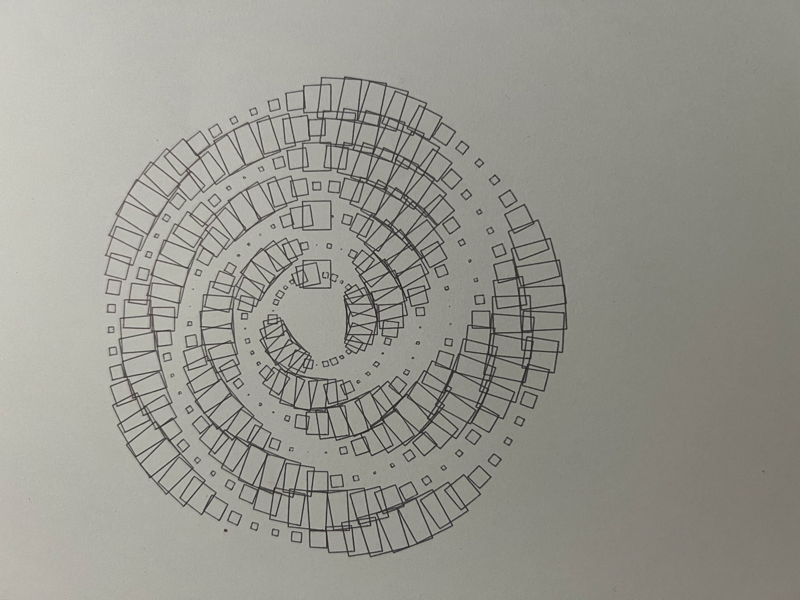

This drawing builds on my pattern from last week. I arranged outlined squares in circular rings and varied their sizes to create a wave-like pattern. I exported one version of the sketch as an SVG and used a pen plotter to draw it on paper. The plotting process went smoothly from start to finish. The ink flowed consistently, so I could let the plotter finish the drawing without stopping to adjust or replace the pen. I enjoyed watching the pattern build up one square at a time. As the pen moved around the page, I could see how the small changes in size added up to a wave across the rings. The areas where the squares overlapped looked denser on paper, and the gaps in the more open areas made the individual outlines easier to see. Seeing those details in the finished drawing helped me think more carefully about spacing, overlapping lines, and how complex a drawing should be for the plotter. Next time, I’d like to try spacing the rings farther apart to see how that changes the rhythm of the pattern on paper.
